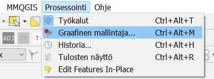
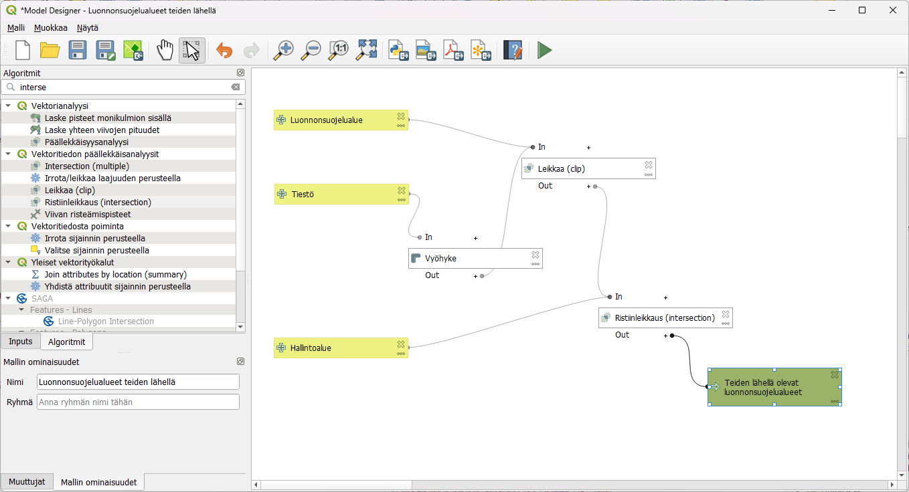
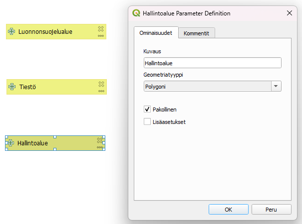
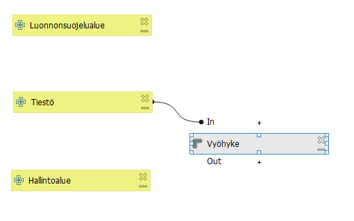
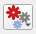
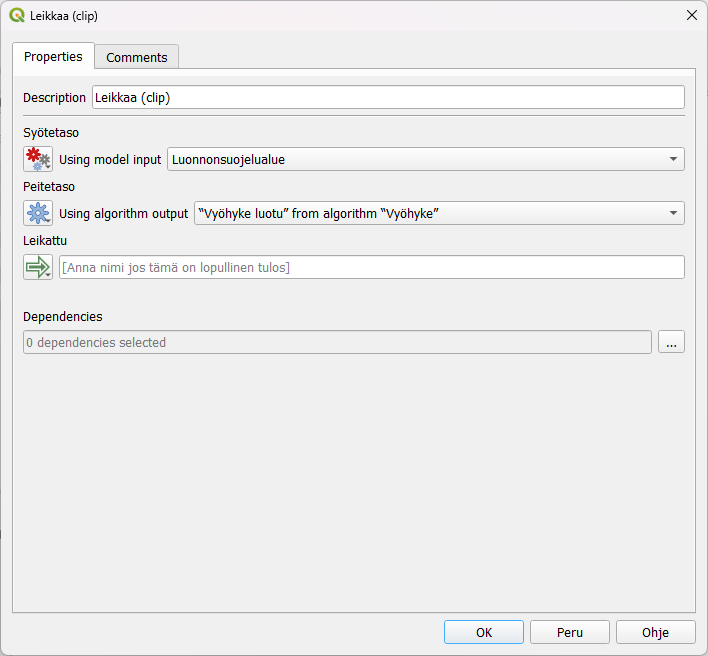
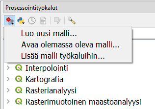

Harjoitus 4: Graafinen mallintaja
Harjoituksen sisältö
Harjoituksessa tutustutaan graafiseen mallintajaan. Mallintajalla laaditaan prosessi ja se tallennetaan myöhempää käyttöä varten.
Harjoituksen tavoite
Koulutettava oppii laatimaan monivaiheisen analyysiprosessin graafisen mallintajan avulla ja oppii käyttämään aiemmin ladattuja prosessimalleja.
Arvioitu kesto
30 minuuttia.
Valmistautuminen
Avaa uusi QGIS-projekti (Projekti > Uusi) ja tallenna se nimellä “QGIS-harjoitus 4”. Avaa projektiisi kurssihakemistosta aineistot
TieViiva.shp
Hallintoalue.shp
NaturaKohde.shp
Graafisen mallintajan toiminnot
Graafisella mallintajalla voit automatisoida ja tallentaa usein toistuvia, monivaiheisia analyysiprosesseja. Prosessin voi jakaa muille käyttäjille, ja sitä käytettäessä valitaan lähtöaineistot aina uudelleen. Prosessinmallintaja avataan yläpalkin valikosta Prosessointi > Graafinen mallintaja… Harjoituksessa käytettävässä aineistossa on muutamia geometriavirheitä, niin varmista, että olet laittanut QGISin asetuksista päälle epäkelpojen kohteiden suodatuksen edellisen harjoituksen alun ohjeiden mukaisesti.

Aukeavassa ikkunassa on vasemman reunan paneelissa kaksi välilehteä: Inputs ja Algoritmit. Näistä valitaan prosessin lähtötiedot ja työkalut, ja ne viedään kaaviomaisen esityksen laatikoiksi ikkunaan raahaamalla tai tuplaklikkaamalla.

Prosessin laatiminen ja testaus
Tehdään graafisessa mallintajassa prosessi, jossa lasketaan suojelualueiden lähellä olevat tiet. Prosessissa tarvitaan useampia eri vektorityökaluja, joten mallintajalla saat tehtyä helposti toistettavan ja myöhemminkin muokattavan prosessin ja työkalun.
Anna ensimmäiseksi prosessillesi nimi, esimerkiksi “Luonnonsuojelualueet teiden lähellä”. Valitse Inputs-välilehdeltä Vektoritaso ja anna sille nimeksi Luonnonsuojelualueet. Aseta tason geometriatyypiksi Polygoni ja ruksi Pakollinen. Lisää vielä kaksi vektoritasoa, jotka voit nimetä Hallintoalueet ja geometriatyypiksi Polygoni. Toiselle uudelle tasolle voit antaa nimeksi Tiestö ja antaa geometriaksi Viiva.

Tehdään ensin tiestölle vyöhykkeet, joiden alueelta etsimme niille osuvia luonnonsuojelualueita. Siirry nyt Algoritmit-välilehdelle. Etsi työkalu Vyöhyke, lisää se malliin ja anna sille syötetasoksi Tiestö ja vyöhykkeen etäisyydeksi 200m. Koska tiestö koostuu pienistä risteyksiin päättyvistä osioista, sulautetaan vielä vyöhykkeet toisiinsa. Valitse vyöhykkeen asetuksista Yhdistä päällekkäiset osioon Kyllä. Huomaa, että voit siirrellä Input- ja Algoritmilaatikoita ja järjestää ne siistiksi prosessiksi.

Seuraavaksi leikataan luonnonsuojelualueet tehdyllä vyöhykkeellä. Etsi työkalu Leikkaa (clip). Valitse syötetasoksi Luonnonsuojelualue. Peitetasoon vaihda tason asetuksista  vaihtoehdoksi Algorithm output ja tasoksi Vyöhyke luotu.

Lopuksi lisätään tieden lähellä oleviin luonnonsuojelualueisiin tieto alueen maakunnasta. Etsi siis vielä työkalu Ristiinleikkaus (intersection), jolla saamme yhdistettyä tiedot hallintoalueista. Valitse syötetasoon asetuksista taas Algorithm output ja tasoksi Leikattu. Peitetasoksi tulee Hallintoalue. Koska tämä on mallissa lopullinen tulos, lisää lopputuloksen nimi ristiinleikkauksen asetuksissa jälkeen. Voit nimetä tason esimerkiksi: Teiden lähellä olevat luonnonsuojelualueet.
Testaa malliasi klikkaamalla Suorita malli -painiketta  . Käynnistyvä prosessi kysyy lähtöaineistoja: valitse kutakin syötetasoa vastaava taso, niistä jotka lisäsit aiemmin projektiisi. Kun klikkaat Suorita, laatimasi prosessi käynnistyy ja tulostiedosto ilmestyy tasoluetteloon. Tallenna toimiva prosessi -painikkeella graafisen mallintajan ikkunassa. Tallenna myös QGIS-projektisi.
. Käynnistyvä prosessi kysyy lähtöaineistoja: valitse kutakin syötetasoa vastaava taso, niistä jotka lisäsit aiemmin projektiisi. Kun klikkaat Suorita, laatimasi prosessi käynnistyy ja tulostiedosto ilmestyy tasoluetteloon. Tallenna toimiva prosessi -painikkeella graafisen mallintajan ikkunassa. Tallenna myös QGIS-projektisi.
Valmiista tulostasosta voit laskea vielä esimerkiksi teiden varsille osuvien suojelualueiden pinta-alan avaamalla attribuuttitaulukon ja lisäämällä sinne uuden sarakkeen. Pinta-aloja voit tarkastella tilastollisesti maakunnittain esimerkiksi Prosessointityökaluista löytyvällä Tilastotiedot ryhmiteltynä luokittain. Valitse kentäksi, josta tilastot lasketaan juuri tekemäsi pinta-ala ja kategoriatiedon sisältävä kenttä listasta esimerkiksi Maaku_ni1 ja paina Suorita. Voit tulleesta taulukkoaineistosta tarkastella pinta-alan tärkeimpiä tunnuslukuja maakunnittain.
Tallennetun prosessin käyttöönotto
Avaa uusi, tyhjä QGIS-projekti. Saat hyödynnettyä myös muiden tekemiä malleja graafisen mallintajan kautta. Edellisessä harjoituksessa laskimme vaarallisia tieristeyksiä Uusimaalla. Kurssihakemistosta löytyy samaan prosessimalli. Lisää se itsellesi Prosessointityökaluista painamalla ja Lisää malli työkaluihin. Navigoi kurssihakemistoosi ja lisää Vaaralliset tieristeykset.model3.

Avaa tallennetut mallisi Prosessointityökalupalkista Mallit-kohdasta. Voit valita lähtöaineistot kurssihakemistosta suoraan  -kohdasta, koska projektissa ei ole mitään tasoja avoinna. Kurssihakemistossa on valmiina vuoden 2021 tieliikenneonnettomuudet, joita voit hyödyntää. Paina vielä suorita.
-kohdasta, koska projektissa ei ole mitään tasoja avoinna. Kurssihakemistossa on valmiina vuoden 2021 tieliikenneonnettomuudet, joita voit hyödyntää. Paina vielä suorita.
{kind=link}
Onnistunut prosessi luo uuden tulostason, jossa on samalla tavalla vaaralliset tieristeykset pistetasona.. Lähtötietona olleet aineistot eivät avaudu QGISiin lainkaan.
Kun olet valmis, tallenna projektitiedosto kurssihakemistoon pikanäppäimellä CTRL + T tai päävalikosta Projekti > Tallenna.
Psst! Koulutuksen jälkeen saat henkilökohtaista tukea Gispon tukipalvelusta. Lähetä kysymyksesi tai kommenttisi osoitteeseen koulutustuki@gispo.fi!